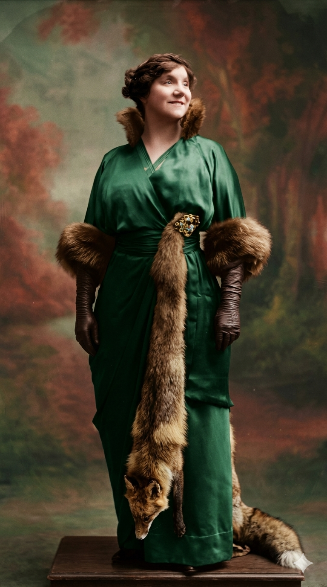

איבט גילבר
Yvette Guilbert
אטימולוגיה ומקור השם המלא
שמות פרטיים מקוריים: אמה, לור, אסתר
נולדה בשם המלא Emma Laure Esther.
Emma: ממקור גרמאני עתיק, פירושו "שלם" או "אוניברסלי".
Laure: מהלטינית Laurus (עץ הדפנה), סמל היסטורי לניצחון וכבוד.
Esther: ממקור פרסי שמשמעותו "כוכב", או על שם אסתר המלכה המקראית.
שם הבמה: איבט (Yvette)
שם פרטי צרפתי פופולרי ממקור גרמאני. נגזר מהשורש Ivo שמשמעותו היא "עץ הטקסוס" (Yew wood), עץ גמיש וחזק שממנו נהגו בעת העתיקה להכין קשתות לקרב. לכן השם נושא גם הקשרים של הגנה וגמישות.
שם משפחה: גילבר (Guilbert)
שם משפחה צרפתי ממוצא גרמאני-פרנקי עתיק. הוא מורכב מהמילים Wille (רצון, תשוקה) ו-berht (בהיר, מפורסם או זוהר). הפירוש המילולי המשותף הוא "בעל רצון עז וזוהר" או "מפורסם בזכות כוח רצונו".
ילדות
איבט גילבר נולדה בפריז, בתו של סוחר גרוטאות (חנויות יד שנייה) ואם כובענית. ילדותה לוותה בקשיים כלכליים ניכרים, ובעקבות המצב בבית, בילתה חלק ניכר משנותיה הראשונות בחבל נורמנדי. כשחזרה לפריז, המציאות טפחה על פניה והיא נאלצה לעזוב את לימודיה בגיל 16 כדי לעזור בפרנסה. היא עבדה תחילה כתופרת, לאחר מכן כמוכרת בחנות כלבו, ואף שימשה כדוגמנית עבור ציירים בפריז. האווירה המחוספסת והקשה של חיי הפועלים ברחובות העיר חשפה אותה לסלנג, לדיבור הישיר ולסיפורי החיים שאותם תשחזר לימים בכישרון כה רב על במות הקברט. היא החלה לקחת שיעורי משחק ודיקציה במימון עצמי כדי לנסות לברוח מגורלה ולפרוץ לעולם הבמה.
אידאולוגיה והישגים
הישגים ויזואליים ומוזה: גילבר הפכה לאייקון הוויזואלי המוכר והמובהק ביותר של תור הזהב הפריזאי, ה"בל אפוק" (Belle Époque). היא הייתה המוזה המרכזית של הצייר הדגול אנרי דה טולוז-לוטרק, שהנציח אותה בכרזותיו המפורסמות במועדון המולן רוז'. הסמלים המסחריים שלה היו כפפות שחורות ארוכות במיוחד (עד מעבר למרפקים), פנים חיוורות במכוון וצוואר ארוך ודק.
אידאולוגיה אמנותית (הזמרת-הדוברת): איבט הייתה החלוצה המובהקת של סגנון ה-Chanson diseuse (שיר המוגש בדיבור). האידאולוגיה שלה לא התמקדה בקול זמיר יפהפה, אלא בהגשה תיאטרונית, אקספרסיבית מאוד ולעיתים אף גרוטסקית. היא השתמשה בגופה, פניה, עיניה וידיה הארוכות כדי "לשחק" את מילות השיר, ולא רק לשיר אותן.
קולן של שולי החברה: בניגוד לזמרות ששרו על רומנטיקה מתקתקה ומנותקת, גילבר התמקדה בהארת חייהם של אנשי השוליים: פועלי כפיים, עניים, פרוצות ונשים מנוצלות. היא הביאה את שפת הרחוב הבוטה והסלנג הפריזאי אל הבמות המכובדות ביותר, מתוך ביקורת חברתית נוקבת והזדהות עמוקה עם מעמד הפועלים.